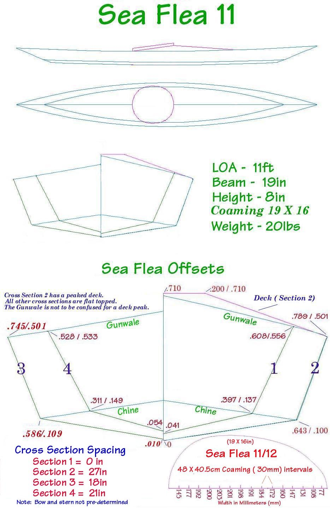

| Sea Flea Offsets | Menu Previous Page Next Page |
|
 NOTE: There is no peaked deckridge at Cross sections 1, 3 and 4 for either of the Sea Flea's as the deck is flat topped at those sections. Only Cross Section 2 is peaked. The curvature/Slope that appears to be a peaked deck, is actually the gunwale (sheer) slope. The offset drawing states "Gunwale" in green print." , but that is not to be confused with a peaked deck. The deckridge on sections 1, 3 and 4 are the same height as the gunwale height ( HAB) so they are flat across the top. It's easiest to understand this when looking at the side view of the boat in the 3-View drawing above. The only cross section on either boat that is peaked is cross section 2. The deckridge begins sloping upward at section 1 and ends at section 2. Cross Section 2 is labeled "Deck (Section 2)" on the offset drawing. The peaked section 2 has a .2 ft ( 2.4") flat section on top as this is the attachment point for the front of the coaming. The back of the coaming rests on the flat topped cross section 3. |
|